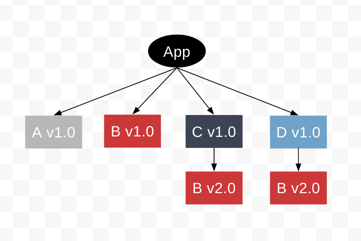
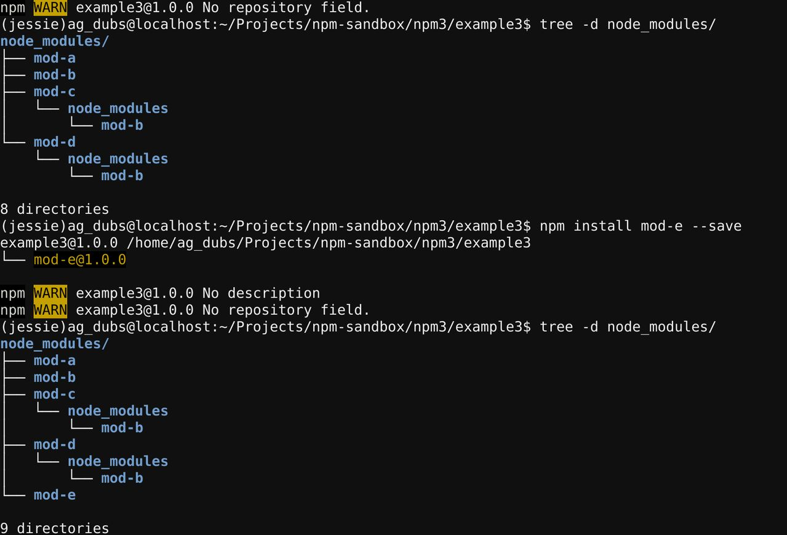
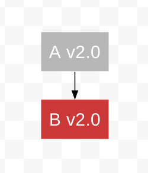
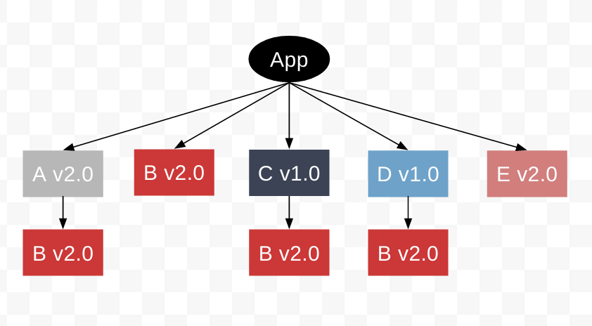

Duplication and Deduping
Let's continue with our example before. Currently we have an application that depends on 2 modules:
- Module-A, depends on Module B v1.0
- Module-C, depends on Module B v2.0

Now we ask ourselves, what happens if we install another module that depends on Module B v1.0? or Module B v2.0?
Example
Ok, so let's say we want to depend on another package, module D. Module D depends on Module B v2.0, just like Module C.

Because B v1.0 is already a top-level dependency, we cannot install B v2.0 as a top level dependency. Therefore Module B v2.0 is installed as a nested dependency of Module D, even though we already have a copy installed, nested beneath Module C.

If a secondary dependency is required by 2+ modules, but was not installed as a top-level dependency in the directory hierarchy, it will be duplicated and nested beneath the primary dependency.
However, if a secondary dependency is required by 2+ modules, but is installed as a top-level dependency in the directory hierarchy, it will not be duplicated, and will be shared by the primary dependencies that require it.
For example, let's say we now want to depend on Module E. Module E, like Module A, depends on Module B v1.0.

Because B v1.0 is already a top-level dependency, we do not need to duplicate and nest it. We simply install Module E and it shares Module B v1.0 with Module A.

This appears like this in the terminal:

Now-- what happens if we update Module A to v2.0, which depends on Module B v2.0, not Module B v1.0?

The key is to remember that install order matters.
Even though Module A was installed first (as v1.0) via our package.json
(because it is ordered alphabetically), using the interactive npm install
command means that Module A v2.0 is the last package installed.
As a result, npm3 does the following things when we run npm install mod-a@2 --save:
- it removes Module A v1.0
- it installs Modules A v2.0
- it leaves Module Bv1.0 because Module E v1.0 still depends on it
- it installs Module Bv2.0 as a nested dependency under Module A v2.0, since Module B v1.0 is already occupying the top level in the directory hierarchy

This looks like this in the terminal:

Finally, let's also update Module E to v2.0, which also depends on Module B v2.0 instead of Module B v1.0, just like the Module A update.

npm3 performs the following things:
- it removes Module E v1.0
- it installs Module E v2.0
- it removes Module B v1.0 because nothing depends on it anymore
- it installs Module B v2.0 in the top level of the directory because there is no other version of Module B there

This looks like this in the terminal:

Now, this is clearly not ideal. We have Module B v2.0 in nearly every directory. To get rid of duplication, we can run:
npm dedupe
This command resolves all of the packages dependencies on Module B v2.0 by redirecting them to the top level copy of Module B v2.0 and removes all the nested copies.

This looks like this in the terminal: